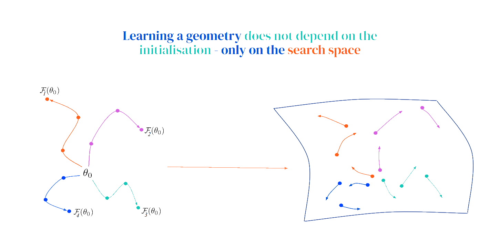
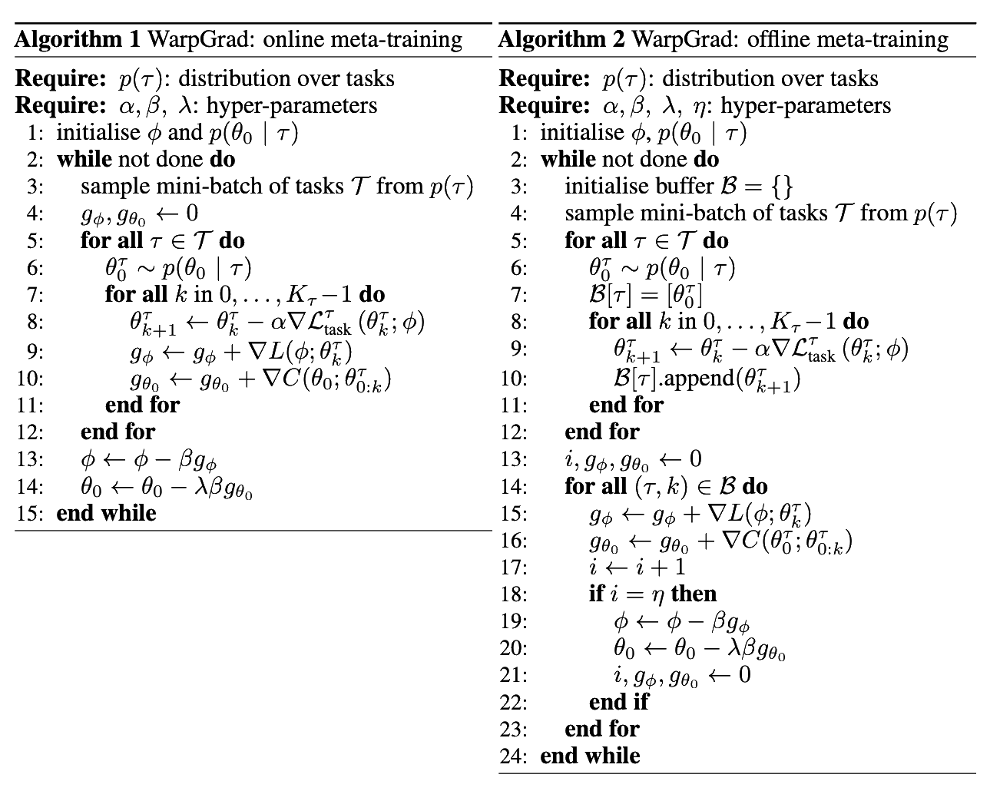

Meta-Learning with Warped Gradient Descent [1] - July 18, 2020
Warp Layers Implicitly Induce Metric
Introduce a warp layer $w$ after each hidden layer $h$ in a NN that parameterizes $f$:
\begin{equation*}
\hat{f} = h^{(L)}\circ ... \circ h^{(1)} \rightarrow \hat{f} = w^{(L)} \circ h^{(L)}\circ ... \circ w^{(1)} \circ h^{(1)}
\end{equation*}
Task-learner layers $h$ are parameterized by $\theta$ and warp layers by $\phi$.
Loss function is $\mathcal{L} = \mathcal{L} (\hat{f}) = \mathcal{L} \left(\hat{f}(\theta, \phi)\right)$.
Let $\mathcal{W}$ be the vector space in which we search for optimal $\theta \in \mathcal{W}$. We do so by performing SGD for $\theta$ with objective $\mathcal{L} \left(\hat{f}(\theta, \phi)\right)$. Backprop procedure passes through warp layers and we obtain some pre-conditioned update rules for $\theta$. We don't want to write this out though - we'll introduce a reparameterization $\gamma $ so that we don't have to write out explicitly anything having to do with warp layer parameters.
Assume there is a manifold $\mathcal{P}$ where what we're doing above is simple SGD for $\theta$ in $\mathcal{P}$. Introduce $\gamma = \Omega(\theta; \phi) \in \mathcal{W}$ - transformation of $\theta$ to coordinates $\gamma$ in original space. This transformation captures the effect of warp-layers so that we can write out update rule for task parameters.
SGD in $\mathcal{P}$
A step of SGD moves $\theta \in \mathcal{P}$ by
\begin{equation*}
\Delta \theta \propto \nabla_{\theta} \left( \mathcal{L} \circ \Omega \right) = [D_{\theta} \Omega(\theta; \phi)]^T \nabla \mathcal{L}(\gamma)
\end{equation*}
we're simply doing SGD in $\mathcal{P}$ and then writing out this update in terms of nicer coordinates $\gamma \in \mathcal{W}$.
Push-forward back to $\mathcal{W}$:
This $\Delta \theta$ translates to
\begin{equation*}
\Delta \gamma \propto [D_{\theta} \Omega(\theta; \phi)] [D_{\theta} \Omega(\theta; \phi)]^T \nabla \mathcal{L}(\gamma)
\end{equation*}
So warp-layers introduce a metric $G^{-1} = [D_{\theta} \Omega] [D_{\theta} \Omega]^T$.
Meta-Learning Warp Layers
Meta objective is to minimize meta-loss after adaptation on task-loss functions:
\begin{equation}
\label{eq:canonical_warp}
\min_{\phi} \mathbb{E}_{\mathcal{L}, \gamma \sim p(\gamma)} \mathcal{L} \left (\gamma - \alpha G^{-1} \nabla \mathcal{L} (\gamma) \right)
\end{equation},
where a task is defined abstractly though a joint distribution over
objectives and parameterisations.
Up to first order in $\alpha$ the loss term above is the same as the loss evaluated after using gradient descent on $\theta$ in deep-net with warp layers:
\begin{equation*}
\min_{\theta} \mathbb{E}_{\tau, \theta^{\tau} \sim p(\tau, \theta^{\tau})} \mathcal{L}^{\tau}_{meta} \left (\theta^{\tau} - \alpha \nabla \mathcal{L}_{task}^{\tau}(\theta^{\tau}; \phi); \phi \right)
\end{equation*}
We sample $\tau \sim p(\tau)$ to compute:
\begin{equation*}
L(\phi) = \sum_{\tau \sim p(\tau)} \sum_{\theta^{\tau} \sim p(\theta^{\tau} | \tau )} \mathcal{L}^{\tau}_{meta} \left (\theta^{\tau} - \alpha \nabla \mathcal{L}_{task}^{\tau}(\theta^{\tau}; \phi); \phi \right)
\end{equation*}
Meta-objective is an expectation over gradient update steps sampled from the search
space induced by task adaptation
Still has second-order terms. We can drop them - we ignore only second order local effects, unlike FO MAML:
\begin{equation*}
L(\phi) = \sum_{\tau \sim p(\tau)} \sum_{\theta^{\tau} \sim p(\theta^{\tau} | \tau )} \mathcal{L}^{\tau}_{meta} \left (sg[\theta^{\tau} - \alpha \nabla \mathcal{L}_{task}^{\tau}(\theta^{\tau}; \phi)]; \phi \right)
\end{equation*}
This objective decouples task-adaptation from meta-learning the warp geometry. For meta-learning assume the task-dependent distribution $p(\theta | \tau)$ is given.
Note WarpGrad is fairly agnostic to how task-adaptation is performed. In particular, might very well do multi-step SGD. The canonical WarpGrad objective in Eq. \ref{eq:canonical_warp} is the expected one-step gradient update over a joint distribution of objective functions (L) and model parameters ($\gamma$): it is a global objective defined in terms of the vector field of the manifold W. It solves for good preconditioning over all of parameter space, irrespective of how many steps of adaptation we are taking on some objective L (from this discussion).

Slide-deck here. Meta-Warp looks at steepest ascent direction at points all over search space (sampled from $p(\theta | \tau)$) and meta-learns good geometry.
Integration with Learned Initialization
Add MAML's meta-objective $C$ to meta-loss function above:
\begin{equation*}
J(\phi, \theta_0) := L(\phi) + \lambda \cdot C(\theta_0)
\end{equation*}

WarpGrad for supervised learning.
References
[1] Flennerhag, S., Rusu, A. A., Pascanu, R., Visin, F., Yin, H., and Hadsell, R. Meta-Learning with Warped Gradient Descent